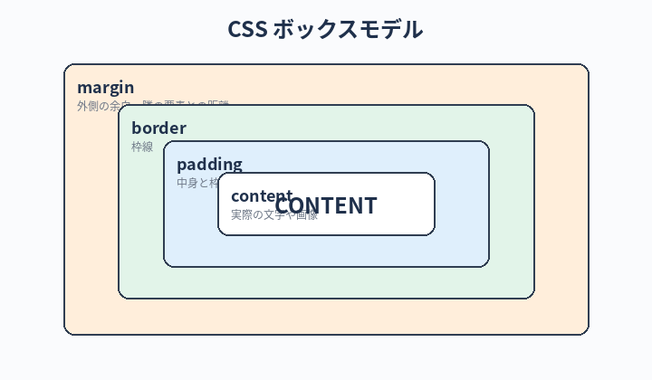

Hello World ページに CSS で色や余白を付けて、見た目を整える。
「自分でゼロから書く」のではなく「AI と相談しながら作る」流れを体験するのが本章の主目的。
実装練習②：CSS で整える（AI と相談）
この章のゴール
CSS って何？
CSS（シーエスエス）は Web ページの見た目を整えるための指示書です。 HTML が「ここは見出し」「ここは段落」と意味を書いた紙だとすると、CSS は「見出しは大きく赤く、段落は読みやすい行間で」と装飾を指示する紙です。
本章のテーマは 「CSS を完璧に覚える」ではなく「AI に頼んで CSS を書いてもらう感覚を身につける」こと。 覚えなくていいので安心してください。
絶対に覚える：CSS の用語
CSS は構造がシンプル：「どこに（セレクタ）」「何を（プロパティ）」「どう設定する（値）」の3点セットです。
Selectorセレクタ
- 一言で
- CSS を当てる対象（どこに）を指定する記述。例：
h1、.btn - たとえると
- 「どこの誰さんに」声をかけるかの呼び方。タグ名で指定したり、クラス名で指定したり
- 関連
- タグセレクタ / class / id
Propertyプロパティ
- 一言で
- そのセレクタに対して何を変えるか。例：
color、font-size - たとえると
- 「色」「文字サイズ」「余白」など、設定できる項目名
- 関連
- 値（value）
Value値
- 一言で
- そのプロパティに具体的にどんな値を入れるか。例：
red、16px - たとえると
- 項目に対する答え。「色」というプロパティに「赤」という値、のように対応する
- 関連
- 単位（px、em、rem、%）
Class / IDクラス／アイディー
- 一言で
- HTML 要素に付ける名札。CSS 側からこの名札を指定して特定の要素にだけ装飾できる
- たとえると
- class＝同じ名札を複数人につけられる（チーム名）／id＝1ページに1人だけ（個人名）
- 関連
- セレクタ
.btn（class）/#header（id）
External Stylesheet外部スタイルシート
- 一言で
- CSS を別ファイル（
.css）に分けて、HTML から読み込む方式 - たとえると
- 「内容」と「見た目」の作業を別ファイルに分けて、整理しやすくする。
<link rel="stylesheet" href="...">で読み込み - 関連
- <style> タグ / インラインスタイル
Cacheキャッシュ
- 一言で
- ブラウザが「前回読んだ CSS をしばらく覚えておく」仕組み
- たとえると
- 初心者が一番引っかかる罠。CSS を変えたのに反映されない時はキャッシュのせい。
command + shift + Rで強制再読み込み - 関連
- 強制リロード / DevTools
準備：第8章のフォルダで作業を続ける
cd ~/dev/hello-world
claude --continue
Step 1：AI に CSS の追加を頼む
まず、雑に頼んでみます。
index.html の Hello World を、もう少し見栄えよくしてください。
・背景は淡いベージュ
・文字は大きめ、画面の中央に配置
・フォントは可読性の高いゴシック体
CSS は HTML の中に書く形でも、別ファイルでも、初心者向けに分かりやすい方を選んで。
・背景は淡いベージュ
・文字は大きめ、画面の中央に配置
・フォントは可読性の高いゴシック体
CSS は HTML の中に書く形でも、別ファイルでも、初心者向けに分かりやすい方を選んで。
Claude は CSS を加えた変更案を提示してきます。差分（変更前 → 変更後）を見て、内容に納得できたら承認。
こんな感じになるはず
<!DOCTYPE html>
<html lang="ja">
<head>
<meta charset="UTF-8">
<title>最初のページ</title>
<style>
body {
background-color: #faf6e9;
font-family: "Hiragino Sans", "Yu Gothic", sans-serif;
display: flex;
justify-content: center;
align-items: center;
min-height: 100vh;
margin: 0;
}
h1 {
font-size: 56px;
color: #2b4a6f;
}
</style>
</head>
<body>
<h1>Hello, World!</h1>
</body>
</html>
ブラウザを更新して反映を確認しましょう。
Step 2：少しずつ注文を変えてみる
AI と相談する練習なので、いろんな注文を投げてみましょう。1つずつ注文するのが上達のコツ。
文字の色をもっと深い青にしてください。
Hello World の下に、薄いグレーで「Welcome to my first page.」と添えてください。
画面下に小さく日付を入れてください。日付は今日の日付で。
1回ごとに保存 → ブラウザ更新で確認するクセをつけましょう。

Step 3：CSS を別ファイルに分ける
HTML の <style> タグの中に CSS を書く方法は手軽ですが、コードが増えると見にくくなります。
実務では style.css という別ファイルに分けるのが一般的です。
今 HTML の中に書いてある CSS を、別ファイル style.css に切り出してください。
HTML 側からは link タグで読み込む形にしてください。
HTML 側からは link タグで読み込む形にしてください。
Claude が以下のような変更を提案してくれます：
style.cssという新しいファイルを作る- HTML から CSS の中身を移動する
- HTML の
<head>に<link rel="stylesheet" href="style.css">を追加
Step 4：自分で1個だけ書いてみる
AI に任せきりにせず、自分でも触ってみましょう。
style.css の h1 のところに、こう書き足してみてください：
h1 {
/* 既存のプロパティはそのまま */
letter-spacing: 0.1em; /* ← ここを追加 */
}
保存してブラウザ更新。文字の間隔が広がっているはずです。
変更が反映されない時は、ブラウザのキャッシュが原因のことがあります。
command + shift + R（強制再読み込み）で解決します。
Step 5：AI に「いまの CSS を解説してもらう」
AI と作業した後は、書いてもらったコードの意味を解説してもらうとぐんと理解が深まります。
今の style.css を、初心者向けに各プロパティの意味を1行ずつ解説してください。
特に display: flex; が何をしているか、絵で例えるように説明してくれると嬉しいです。
特に display: flex; が何をしているか、絵で例えるように説明してくれると嬉しいです。
「AI と相談する」の正解の感覚
- 命令ではなく、相談する：「こうしろ」より「こんな感じにしたいんだけど、どう書く？」
- 注文は1つずつ：一気に5つの変更を頼むと、どれが反映されたか分からなくなる
- 気に入らなかったら戻して、別案を頼む：「やっぱり戻して、もっとシンプルに」もアリ
- 動いたら一回 git commit する（第11章）：節目で保存しておけば、次の挑戦で失敗しても戻せる
「AI が書いてくれるから自分のタイピングは遅くても問題ない」これは逃げだ。 AI に指示を素早く投げられる人ほど、相棒を使い倒せる。指示が 1 行 30 秒かかる人と、5 秒で打てる人の生産性は段違い。
キーボードは見ない、トラックパッドは触らない、トラックボールで動く。 Poolside の標準スタイルだ。最初は遅くてもいい。3 ヶ月後に化けてればそれでいい。
注意：意味を理解しないまま進めない
AI が書いてくれたコードは、「自分が分かるレベル」でだけ受け入れましょう。
意味の分からないまま積み重ねると、後で「なぜこう動いているのか」を説明できなくなります。
分からない箇所は 必ず AI に解説してもらってください。
分からない箇所は 必ず AI に解説してもらってください。
本章のチェックリスト
すべてチェックを付けると「次の章へ」のリンクが解放されます。
チェック 0 / 4
次の章へ
見た目が整いました。次の第10章では、JavaScript で動きを付けてみます。Hello World が動き出します。